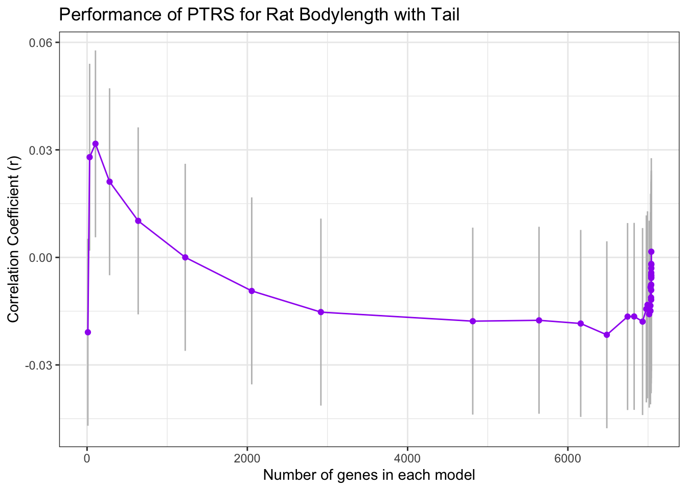
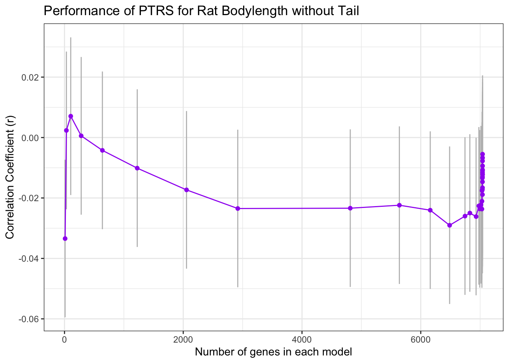

Predict Rat Traits with PTRS
sabrina-mi
2023-04-04
Last updated: 2023-04-24
Checks: 7 0
Knit directory: PTRS-Rat-Analysis/
This reproducible R Markdown analysis was created with workflowr (version 1.7.0). The Checks tab describes the reproducibility checks that were applied when the results were created. The Past versions tab lists the development history.
Great! Since the R Markdown file has been committed to the Git repository, you know the exact version of the code that produced these results.
Great job! The global environment was empty. Objects defined in the global environment can affect the analysis in your R Markdown file in unknown ways. For reproduciblity it’s best to always run the code in an empty environment.
The command set.seed(20230404) was run prior to running
the code in the R Markdown file. Setting a seed ensures that any results
that rely on randomness, e.g. subsampling or permutations, are
reproducible.
Great job! Recording the operating system, R version, and package versions is critical for reproducibility.
Nice! There were no cached chunks for this analysis, so you can be confident that you successfully produced the results during this run.
Great job! Using relative paths to the files within your workflowr project makes it easier to run your code on other machines.
Great! You are using Git for version control. Tracking code development and connecting the code version to the results is critical for reproducibility.
The results in this page were generated with repository version 808f440. See the Past versions tab to see a history of the changes made to the R Markdown and HTML files.
Note that you need to be careful to ensure that all relevant files for
the analysis have been committed to Git prior to generating the results
(you can use wflow_publish or
wflow_git_commit). workflowr only checks the R Markdown
file, but you know if there are other scripts or data files that it
depends on. Below is the status of the Git repository when the results
were generated:
Ignored files:
Ignored: .DS_Store
Ignored: .Rhistory
Ignored: .Rproj.user/
Ignored: GEMMA/
Ignored: analysis/.DS_Store
Ignored: analysis/.Rhistory
Ignored: code/.DS_Store
Untracked files:
Untracked: code/Ac_GEMMA_BSLMM.sh
Untracked: code/generate_GRMs.yaml
Untracked: code/run_BSLMM.yaml
Untracked: code/subset_geno.awk
Untracked: code/write_GEMMA_inputs.R
Note that any generated files, e.g. HTML, png, CSS, etc., are not included in this status report because it is ok for generated content to have uncommitted changes.
These are the previous versions of the repository in which changes were
made to the R Markdown (analysis/PTRS_Predict.Rmd) and HTML
(docs/PTRS_Predict.html) files. If you’ve configured a
remote Git repository (see ?wflow_git_remote), click on the
hyperlinks in the table below to view the files as they were in that
past version.
| File | Version | Author | Date | Message |
|---|---|---|---|---|
| html | 808f440 | sabrina-mi | 2023-04-24 | Build site. |
| Rmd | d5812dc | sabrina-mi | 2023-04-24 | wflow_publish("analysis/PTRS_Predict.Rmd") |
| html | 6788074 | sabrina-mi | 2023-04-24 | Build site. |
| html | 791b48e | sabrina-mi | 2023-04-24 | Build site. |
| Rmd | 4ff051d | sabrina-mi | 2023-04-24 | wflow_publish("analysis/PTRS_Predict.Rmd") |
| html | 5db94f8 | sabrina-mi | 2023-04-04 | Build site. |
| Rmd | 7dd0181 | sabrina-mi | 2023-04-04 | migrated box analysis files |
library(tidyverse)── Attaching core tidyverse packages ──────────────────────── tidyverse 2.0.0 ──
✔ dplyr 1.1.1 ✔ readr 2.1.4
✔ forcats 1.0.0 ✔ stringr 1.5.0
✔ ggplot2 3.4.1 ✔ tibble 3.2.1
✔ lubridate 1.9.2 ✔ tidyr 1.3.0
✔ purrr 1.0.1
── Conflicts ────────────────────────────────────────── tidyverse_conflicts() ──
✖ dplyr::filter() masks stats::filter()
✖ dplyr::lag() masks stats::lag()
ℹ Use the ]8;;http://conflicted.r-lib.org/conflicted package]8;; to force all conflicts to become errorslibrary(data.table)
Attaching package: 'data.table'
The following objects are masked from 'package:lubridate':
hour, isoweek, mday, minute, month, quarter, second, wday, week,
yday, year
The following objects are masked from 'package:dplyr':
between, first, last
The following object is masked from 'package:purrr':
transposelibrary(RSQLite)
library(glmnet)Loading required package: Matrix
Attaching package: 'Matrix'
The following objects are masked from 'package:tidyr':
expand, pack, unpack
Loaded glmnet 4.1-6library(data.table)
"%&%" = function(a,b) paste(a,b,sep="")
devtools::source_gist("ee5f67abddd0b761ee24410ea71c41aa")ℹ Sourcing gist "ee5f67abddd0b761ee24410ea71c41aa"
ℹ SHA-1 hash of file is "c56941964697a118c351c3f81322a221fa13a1b3"devtools::source_gist("38431b74c6c0bf90c12f")ℹ Sourcing gist "38431b74c6c0bf90c12f"
ℹ SHA-1 hash of file is "cbeca7fd9bf1602dee41c4f1880cc3a5e8992303"devtools::source_gist("1e9053c8f35c30396429350a08f33ea7")ℹ Sourcing gist "1e9053c8f35c30396429350a08f33ea7"
ℹ SHA-1 hash of file is "7388784ab8c7c2dc5c3f950dc8a47a1c76e3d7ac"Predict Traits with Yanyu’s PTRS models
traits <- c("height", "bmi")
dir="/Users/sabrinami/Library/CloudStorage/Box-Box/rat-genomic-analysis/PTRS-2023/"
# folder with PrediXcan results
results.dir <- dir %&% "RatXcan/Results/"
# folder with PTRS weights, predicted traits will output here
data.dir <- dir %&%"RatData/"Data Wrangling
orth.rats <- suppressMessages(read_tsv(dir %&% "RatXcan/ortholog_genes_rats_humans.tsv"))
pred_expr <- suppressMessages(read_tsv(results.dir %&% "Br_EN__predict.txt"))
pred_expr$IID = pred_expr$FID
#filter only for genes that have a human ortholog
pred_expr <- pred_expr %>% select(c(IID, intersect(colnames(pred_expr), orth.rats$rnorvegicus_homolog_ensembl_gene) ))
## workaround, since pred_expr
#change name to human ensembl id in humans
colnames(pred_expr)[2:ncol(pred_expr)] <- orth.rats[match(colnames(pred_expr)[2:ncol(pred_expr)], orth.rats$rnorvegicus_homolog_ensembl_gene), 1] %>% .[["ensembl_gene_id"]]fn_weights = function(trait)
{
weights <- read_tsv(dir %&% "PTRS-models/elastic_net_alpha_0.1_British.export_model/weights." %&% trait %&% ".tsv.gz")
weights$gene_id <- sapply(strsplit(weights$gene_id, "\\."), `[`, 1)
rownames(weights) <- weights$gene_id
weights <- weights %>% rename(gene_name = gene_id)
return(weights)
}for(trait in traits) {
weights <- fn_weights(trait)
pred_trait <- fn_generate_trait(pred_expr, weights)
saveRDS(pred_trait, results.dir %&% "rat_pred_" %&% trait %&% "_w_Human_best_PTRS.RDS")
return(pred_trait)
}compute correlations
fn_corr = function(pheno, pred_trait, n_genes, RDS){
trait_df <- data.frame(estimate = numeric(), pvalue = numeric(), model = character(), n_genes_in_model = numeric(), conf.int.min = numeric(), conf.int.max = numeric())
tempo <- pred_trait[na.omit(match(pheno[,1], rownames(pred_trait))), ]
for(i in 1:ncol(tempo)){
cor = cor.test(pheno[,2], tempo[,i])
trait_df[i,1] <- cor$estimate
trait_df[i,2] <- cor$p.value
trait_df[i,3] <- paste("model", i, sep = "_")
trait_df[i,4] <- n_genes[i,1]
trait_df[i,5] <- cor$conf.int[1]
trait_df[i,6] <- cor$conf.int[2]
saveRDS(trait_df, RDS)
}
return(trait_df)
} fn_corr_plot = function(file,title){
trait_df <- readRDS(file)
p1 = ggplot(trait_df, aes(n_genes_in_model, estimate)) + geom_errorbar(aes(ymin = conf.int.min, ymax = conf.int.max ), width=0.2, color="gray") + geom_point(color = "purple", position="jitter") + geom_line(color = "purple") + xlab("Number of genes in each model") + ylab("Correlation Coefficient (r)") + ggtitle(title) + theme_bw()
return(p1)
}Plot PTRS Correlations for Rats
pheno_file <- read.csv(data.dir %&% "phenotypes/obesity_upublished_data_raw_phenotypes_PalmerLab.csv")traits <- c("height")
rat_analogue <- c("length_wo_tail_cm")
names(rat_analogue) <- traitsfor (trait in traits) {
# data wrangling
pheno <- pheno_file %>% dplyr::select(c(rfid, rat_analogue[[trait]])) %>% na.omit()
weights <- read_tsv(dir %&% "PTRS-models/elastic_net_alpha_0.1_British.export_model/weights." %&% trait %&% ".tsv.gz") %>% rename(gene_name = gene_id)
n_genes = as.matrix(apply(weights[,2:ncol(weights)], 2, function(x) sum(x != 0 )))
# corr inputs
n_genes <- n_genes[-1, , drop = FALSE]
pred_trait <- readRDS(results.dir %&% "rat_pred_" %&% trait %&% "_w_Human_best_PTRS.RDS")[,-1]
pheno <- pheno[na.omit(match(rownames(pred_trait), pheno$rfid)),]
RDS <- results.dir %&% "corr_" %&% rat_analogue[[trait]] %&% "_rat_PTRS.RDS"
# output dataframe for plot
trait_df <- fn_corr(pheno, pred_trait, n_genes, RDS)
# plot
}
pred_length_w_tail=readRDS(results.dir %&% "rat_pred_" %&% trait %&% "_w_Human_best_PTRS.RDS")fn_corr_plot(results.dir %&% "corr_length_w_tail_cm_rat_PTRS.RDS", "Performance of PTRS for Rat Bodylength with Tail")Warning: Removed 1 rows containing missing values (`geom_point()`).Warning: Removed 1 row containing missing values (`geom_line()`).
| Version | Author | Date |
|---|---|---|
| 791b48e | sabrina-mi | 2023-04-24 |
fn_corr_plot(results.dir %&% "corr_length_wo_tail_cm_rat_PTRS.RDS", "Performance of PTRS for Rat Bodylength without Tail")Warning: Removed 1 rows containing missing values (`geom_point()`).Warning: Removed 1 row containing missing values (`geom_line()`).
| Version | Author | Date |
|---|---|---|
| 791b48e | sabrina-mi | 2023-04-24 |
Festus PTRS
library(rhdf5)
library(data.table)
library(tidyverse)
res.dir = "/Users/sabrinami/Library/CloudStorage/Box-Box/rat-genomic-analysis/PTRS-2023/PTRS-models"
in.file <- glue::glue("{res.dir}/spxcan2ptrs_original_scale_pt.GIANT_HEIGHT_YENGO_2022.Muscle_Skeletal.results.h5")
h5ls(in.file) group name otype dclass dim
0 / dataset_0 H5I_GROUP
1 /dataset_0 betahat H5I_DATASET FLOAT 11 x 7662
2 /dataset_0 pval_cutoffs H5I_DATASET FLOAT 11
3 / genes H5I_DATASET STRING 7662h5.data <- h5read(in.file, "/")
bb = h5.data[["dataset_0"]][["betahat"]]
ll = h5.data[["dataset_0"]][["lambda_seq"]]
gg = h5.data[["genes"]]data.dir = "/Users/sabrinami/Library/CloudStorage/Box-Box/rat-genomic-analysis/PTRS-2023/RatData"
traits <- glue::glue("{data.dir}/phenotypes/obesity_upublished_data_raw_phenotypes_PalmerLab.csv")
measured.traits <- fread(traits) %>% filter(!is.na(length_wo_tail_cm))
m_height <- measured.traits %>% select(IID=rfid,HGHT=length_wo_tail_cm)nn.dta <- measured.traits %>%
select(IID=rfid,HGHT=length_wo_tail_cm,SEX=sex)
test <- lm(paste0("HGHT", " ~ ", " SEX"),
data = nn.dta)
adj.height <- data.frame(IID = nn.dta$IID, HGHT = resid(test))obs.file <- glue::glue("{data.dir}/phenotypes/gexBr.csv")
obs.gene <- fread(obs.file)
obs.gene <- rename(obs.gene, IID=X)
orth.rats = fread("/Users/sabrinami/Library/CloudStorage/Box-Box/rat-genomic-analysis/PTRS-2023/RatXcan/ortholog_genes_rats_humans.tsv")
# filter for genes with human ortholog
obs.exp <- obs.gene %>% select(c(IID, intersect(colnames(obs.gene), orth.rats$rnorvegicus_homolog_ensembl_gene) ))
colnames(obs.exp)[2:ncol(obs.exp)] <- orth.rats[match(colnames(obs.exp)[2:ncol(obs.exp)], orth.rats$rnorvegicus_homolog_ensembl_gene), 1] %>% .[["ensembl_gene_id"]]## predicted expression for rats with phenotype data
pred.ctimp = fread("/Users/sabrinami/Library/CloudStorage/Box-Box/rat-genomic-analysis/PTRS-2023/RatXcan/Results/Br_EN__predict.txt", header=TRUE)
pred.ctimp$IID = pred.ctimp$FID
pred.ctimp = pred.ctimp %>% select(c(IID, intersect(colnames(pred.ctimp), orth.rats$rnorvegicus_homolog_ensembl_gene) ))
colnames(pred.ctimp)[2:ncol(pred.ctimp)] <- orth.rats[match(colnames(pred.ctimp)[2:ncol(pred.ctimp)], orth.rats$rnorvegicus_homolog_ensembl_gene), 1] %>% .[["ensembl_gene_id"]]Festus’s PTRS functions
fast_generate_trait <- function(exp, weights){
# convert the predicted df into a matrix
test <- exp %>% column_to_rownames(var = "IID") %>%
as.matrix()
weights = weights %>% data.frame() %>%
column_to_rownames(var = "gene_name") %>% as.matrix()
# find the intersect
ww <- weights[intersect(colnames(test), rownames(weights)), ,drop = FALSE ]
test <- test[, intersect(colnames(test), rownames(ww))]
aa = test %*% ww
return(aa)
}
ext_weights <- function(hd5file) {
## get atable of weights for different models from a h5 file
h5.data <- h5read(hd5file, "/")
bb = h5.data[["dataset_0"]][["betahat"]]
ll = h5.data[["dataset_0"]][["lambda_seq"]]
gg = h5.data[["genes"]]
ptrs.weights <- bb %>% data.frame() %>%
setnames(., names(.), gsub("\\..*","",gg)) %>%
rownames_to_column(var = "model") %>%
mutate(model = glue::glue("model_{model}")) %>%
column_to_rownames(var = "model") %>%
t() %>% data.frame() %>%
rownames_to_column(var = "gene_name")
return(ptrs.weights)
}
run_trait_cor <- function(obs.exp,pred.exp,ptrs.weights,m.trait,adj.height) {
## gene.exp: gene expression df IID first col then genes with no version.
## ptrs.weights: gene first col then models
## m.trait: observed trait IID first col and trait measured second col
pred.cors <- data.frame(model=as.character(), param = as.character(),
group = as.character(), corr = as.numeric(),
pvalue = as.numeric())
pred.heights <- m.trait
for (mmm in names(ptrs.weights)[-1]) {
ptrs.temp <- ptrs.weights %>%
select(gene_name, all_of(mmm))
### OBSERVED GENE EXPRESSION
pred_height <- fast_generate_trait(obs.exp,ptrs.temp) %>%
data.frame() %>% setnames(.,names(.), c("predicted")) %>%
rownames_to_column(var = "IID")
## correlations
all.cor <- m_height %>%
inner_join(pred_height, by = "IID")
cor.result <- cor.test(all.cor$HGHT,all.cor$predicted)
pvalue <- cor.result$p.value
estimate <- cor.result$estimate
pred.cors <- pred.cors %>%
add_row(model = "obs.height",param = mmm, group = "obs.exp",
corr = estimate,pvalue = pvalue)
## Create a dataframe
pred.heights <- pred.heights %>%
inner_join(pred_height %>% dplyr::rename(!!mmm := predicted)
, by = "IID")
## Adjusted height
all.cor <- adj.height %>%
inner_join(pred_height, by = "IID")
cor.result <- cor.test(all.cor$HGHT,all.cor$predicted)
pvalue <- cor.result$p.value
estimate <- cor.result$estimate
pred.cors <- pred.cors %>%
add_row(model = "adj.height", param = mmm, group = "obs.exp",
corr = estimate,pvalue = pvalue)
######################################
##PREDICTED GENE EXPRESSION
pred_height <- fast_generate_trait(pred.exp,ptrs.temp) %>%
data.frame() %>% setnames(.,names(.), c("predicted")) %>%
rownames_to_column(var = "IID")
## correlations
all.cor <- m_height %>%
inner_join(pred_height, by = "IID")
cor.result <- cor.test(all.cor$HGHT,all.cor$predicted)
pvalue <- cor.result$p.value
estimate <- cor.result$estimate
pred.cors <- pred.cors %>%
add_row(model = "obs.height",param = mmm, group = "pred.exp",
corr = estimate,pvalue = pvalue)
## Create a dataframe
pred.heights <- pred.heights %>%
inner_join(pred_height %>% dplyr::rename(!!mmm := predicted)
, by = "IID")
## Adjusted height
all.cor <- adj.height %>%
inner_join(pred_height, by = "IID")
cor.result <- cor.test(all.cor$HGHT,all.cor$predicted)
pvalue <- cor.result$p.value
estimate <- cor.result$estimate
pred.cors <- pred.cors %>%
add_row(model = "adj.height", param = mmm, group = "pred.exp",
corr = estimate,pvalue = pvalue)
}
ff <- factor(unique(pred.cors$param))
plt <- pred.cors %>%
mutate(param = factor(param, levels = ff)) %>%
select(-pvalue) %>% spread(group,corr) %>%
ggplot( aes(x=param, group = model, color = model)) +
geom_line(aes(y=obs.exp),linetype="dotted") +
geom_line(aes(y=pred.exp)) +
theme_classic() +
theme(axis.text.x=element_blank())
print(plt)
return(list(pred.cors=pred.cors,pred.heights=pred.heights))
}print("trait: length without tail")[1] "trait: length without tail"org.out = run_trait_cor(obs.exp,pred.ctimp,ext_weights(in.file),m_height,adj.height)
| Version | Author | Date |
|---|---|---|
| 791b48e | sabrina-mi | 2023-04-24 |
org.out$pred.cors %>% filter(group=="obs.exp") %>% arrange(pvalue) model param group corr pvalue
1 obs.height model_11 obs.exp 0.24645709 0.0001762908
2 obs.height model_10 obs.exp 0.24641363 0.0001767713
3 obs.height model_5 obs.exp 0.24579154 0.0001837857
4 obs.height model_1 obs.exp 0.24579151 0.0001837860
5 obs.height model_2 obs.exp 0.24579151 0.0001837860
6 obs.height model_3 obs.exp 0.24579151 0.0001837860
7 obs.height model_4 obs.exp 0.24579151 0.0001837860
8 obs.height model_6 obs.exp 0.24579095 0.0001837925
9 obs.height model_7 obs.exp 0.24578944 0.0001838099
10 obs.height model_8 obs.exp 0.24578687 0.0001838394
11 obs.height model_9 obs.exp 0.24577632 0.0001839606
12 adj.height model_10 obs.exp 0.09926366 0.1359651084
13 adj.height model_8 obs.exp 0.09799229 0.1410758435
14 adj.height model_1 obs.exp 0.09798691 0.1410977472
15 adj.height model_2 obs.exp 0.09798691 0.1410977472
16 adj.height model_3 obs.exp 0.09798691 0.1410977472
17 adj.height model_4 obs.exp 0.09798691 0.1410977472
18 adj.height model_5 obs.exp 0.09798672 0.1410985301
19 adj.height model_6 obs.exp 0.09798640 0.1410998468
20 adj.height model_7 obs.exp 0.09798580 0.1411022685
21 adj.height model_9 obs.exp 0.09796805 0.1411746778
22 adj.height model_11 obs.exp 0.09544464 0.1517567016print("trait: length with tail")[1] "trait: length with tail"measured.traits <- fread(traits) %>% filter(!is.na(length_w_tail_cm))
m_height <- measured.traits %>% select(IID=rfid,HGHT=length_w_tail_cm)
nn.dta <- measured.traits %>%
select(IID=rfid,HGHT=length_w_tail_cm,SEX=sex)
test <- lm(paste0("HGHT", " ~ ", " SEX"),
data = nn.dta)
adj.height <- data.frame(IID = nn.dta$IID, HGHT = resid(test))
org.out = run_trait_cor(obs.exp,pred.ctimp,ext_weights(in.file),m_height,adj.height)
| Version | Author | Date |
|---|---|---|
| 791b48e | sabrina-mi | 2023-04-24 |
org.out$pred.cors %>% filter(group=="obs.exp") %>% arrange(pvalue) model param group corr pvalue
1 obs.height model_11 obs.exp 0.2454144 0.0001881643
2 obs.height model_10 obs.exp 0.2436298 0.0002102324
3 obs.height model_5 obs.exp 0.2430405 0.0002180354
4 obs.height model_1 obs.exp 0.2430405 0.0002180360
5 obs.height model_2 obs.exp 0.2430405 0.0002180360
6 obs.height model_3 obs.exp 0.2430405 0.0002180360
7 obs.height model_4 obs.exp 0.2430405 0.0002180360
8 obs.height model_6 obs.exp 0.2430399 0.0002180438
9 obs.height model_7 obs.exp 0.2430380 0.0002180691
10 obs.height model_8 obs.exp 0.2430242 0.0002182553
11 obs.height model_9 obs.exp 0.2430141 0.0002183917
12 adj.height model_10 obs.exp 0.1083706 0.1034076488
13 adj.height model_11 obs.exp 0.1071747 0.1072937555
14 adj.height model_1 obs.exp 0.1069974 0.1078795801
15 adj.height model_2 obs.exp 0.1069974 0.1078795801
16 adj.height model_3 obs.exp 0.1069974 0.1078795801
17 adj.height model_4 obs.exp 0.1069974 0.1078795801
18 adj.height model_5 obs.exp 0.1069972 0.1078802058
19 adj.height model_6 obs.exp 0.1069968 0.1078815624
20 adj.height model_7 obs.exp 0.1069955 0.1078859584
21 adj.height model_8 obs.exp 0.1069829 0.1079276888
22 adj.height model_9 obs.exp 0.1069565 0.1080151270
sessionInfo()R version 4.2.2 (2022-10-31)
Platform: x86_64-apple-darwin17.0 (64-bit)
Running under: macOS Big Sur ... 10.16
Matrix products: default
BLAS: /Library/Frameworks/R.framework/Versions/4.2/Resources/lib/libRblas.0.dylib
LAPACK: /Library/Frameworks/R.framework/Versions/4.2/Resources/lib/libRlapack.dylib
locale:
[1] en_US.UTF-8/en_US.UTF-8/en_US.UTF-8/C/en_US.UTF-8/en_US.UTF-8
attached base packages:
[1] stats graphics grDevices utils datasets methods base
other attached packages:
[1] rhdf5_2.42.0 glmnet_4.1-6 Matrix_1.5-3 RSQLite_2.3.0
[5] data.table_1.14.8 lubridate_1.9.2 forcats_1.0.0 stringr_1.5.0
[9] dplyr_1.1.1 purrr_1.0.1 readr_2.1.4 tidyr_1.3.0
[13] tibble_3.2.1 ggplot2_3.4.1 tidyverse_2.0.0 workflowr_1.7.0
loaded via a namespace (and not attached):
[1] fs_1.6.1 usethis_2.1.6 devtools_2.4.5
[4] bit64_4.0.5 httr_1.4.5 rprojroot_2.0.3
[7] gh_1.4.0 tools_4.2.2 profvis_0.3.7
[10] bslib_0.4.2 utf8_1.2.3 R6_2.5.1
[13] DBI_1.1.3 colorspace_2.1-0 rhdf5filters_1.10.0
[16] urlchecker_1.0.1 withr_2.5.0 tidyselect_1.2.0
[19] prettyunits_1.1.1 processx_3.8.0 curl_5.0.0
[22] bit_4.0.5 compiler_4.2.2 git2r_0.31.0
[25] httr2_0.2.2 cli_3.6.0 labeling_0.4.2
[28] sass_0.4.5 scales_1.2.1 callr_3.7.3
[31] rappdirs_0.3.3 digest_0.6.31 rmarkdown_2.20
[34] pkgconfig_2.0.3 htmltools_0.5.4 sessioninfo_1.2.2
[37] highr_0.10 fastmap_1.1.1 htmlwidgets_1.6.2
[40] rlang_1.1.0 rstudioapi_0.14 shiny_1.7.4
[43] farver_2.1.1 shape_1.4.6 jquerylib_0.1.4
[46] generics_0.1.3 jsonlite_1.8.4 magrittr_2.0.3
[49] Rhdf5lib_1.20.0 Rcpp_1.0.10 munsell_0.5.0
[52] fansi_1.0.4 lifecycle_1.0.3 stringi_1.7.12
[55] whisker_0.4.1 yaml_2.3.7 pkgbuild_1.4.0
[58] grid_4.2.2 blob_1.2.4 promises_1.2.0.1
[61] crayon_1.5.2 miniUI_0.1.1.1 lattice_0.20-45
[64] splines_4.2.2 hms_1.1.3 knitr_1.42
[67] ps_1.7.3 pillar_1.9.0 codetools_0.2-19
[70] pkgload_1.3.2 glue_1.6.2 evaluate_0.20
[73] getPass_0.2-2 remotes_2.4.2 vctrs_0.6.1
[76] tzdb_0.3.0 httpuv_1.6.9 foreach_1.5.2
[79] gtable_0.3.3 cachem_1.0.7 xfun_0.37
[82] mime_0.12 xtable_1.8-4 gitcreds_0.1.2
[85] later_1.3.0 survival_3.5-5 iterators_1.0.14
[88] memoise_2.0.1 timechange_0.2.0 ellipsis_0.3.2